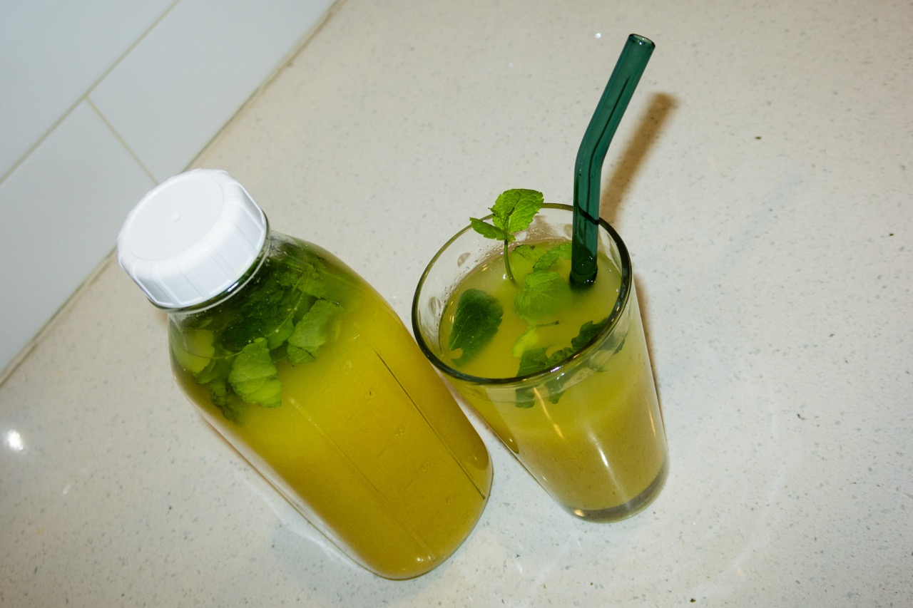

-

Laos: Nam Khao
One dish that Ashley Sayarath recommends as an introduction to Lao food is Nam Khao, sharing that the crispy rice salad is a great way to become acquainted with the flavors and textures of Lao cuisine.
-

Navajo Nation: Frybread
For Navajo multi-media artist Parker Puls in particular, frybread has offered an accessible means of remaining in touch with her late grandmother as well her cultural roots.
-

The Ivory Coast: Gnamankoudji
For years, gnamankoudji was something multidisciplinary artist Nadia O'Hara connected solely to her mother — until, in 2013, when she traveled to the Ivory Coast, her mother's birthplace.